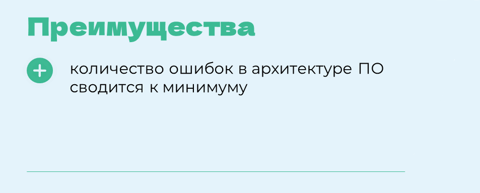
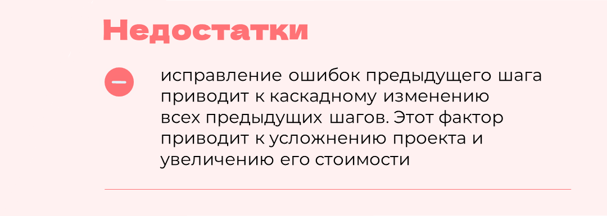

Разработка через тестирование (V – образная модель)

Разработка через тестирование (TDD) – это подход к разработке программного обеспечения, который подразумевает написание автоматических тестов перед написанием кода. Процесс включает написание тестового сценария, написание кода для прохождения теста и затем рефакторинг кода. TDD подходит для проектов с изменяющимися требованиями и необходимостью частого тестирования

